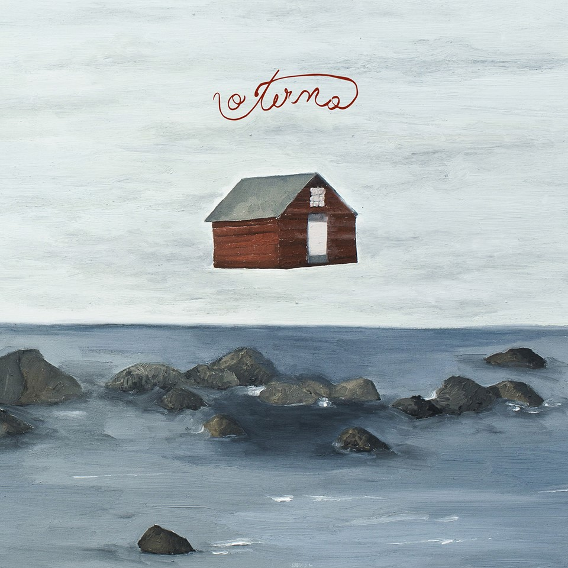
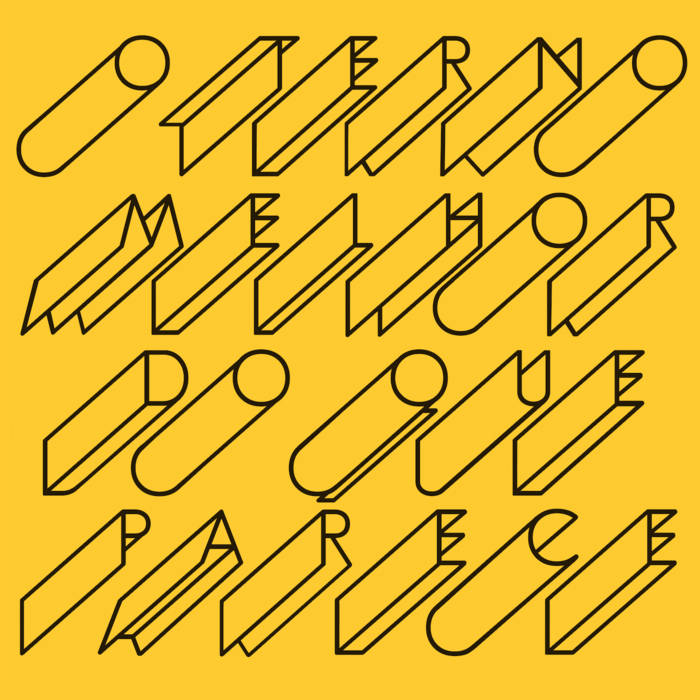
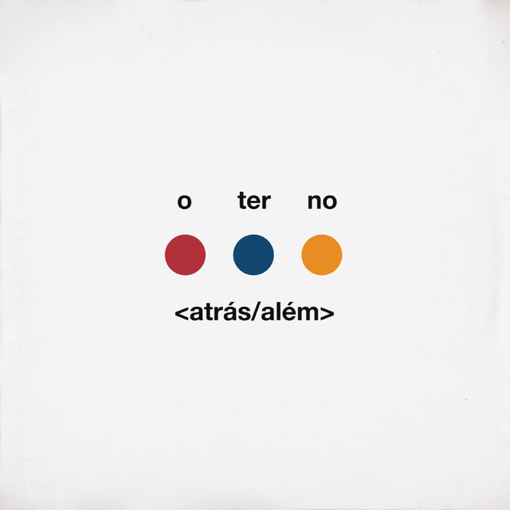

O terno
Do brasil para o mundo
O Terno é uma banda de rock de São Paulo, formada por Tim Bernardes, Guilherme D'Almeida e Gabriel Basile. Em junho de 2012, lançou seu primeiro disco, 66, de forma independente. Desde seu lançamento, o disco foi muito bem avaliado, sendo considerado pelo jornal O Globo como "um dos mais impressionantes discos de estreia de uma banda brasileira" e colocado entre os 25 melhores álbuns brasileiros de 2012 pela revista Rolling Stone Brasil. O disco contêm 5 músicas autorais e 5 músicas escritas por Maurício Pereira, com arranjos do trio.
DISCOGRAFIA

O terno - 2014

Melhor do que parece - 2016

Atrás/além - 2019